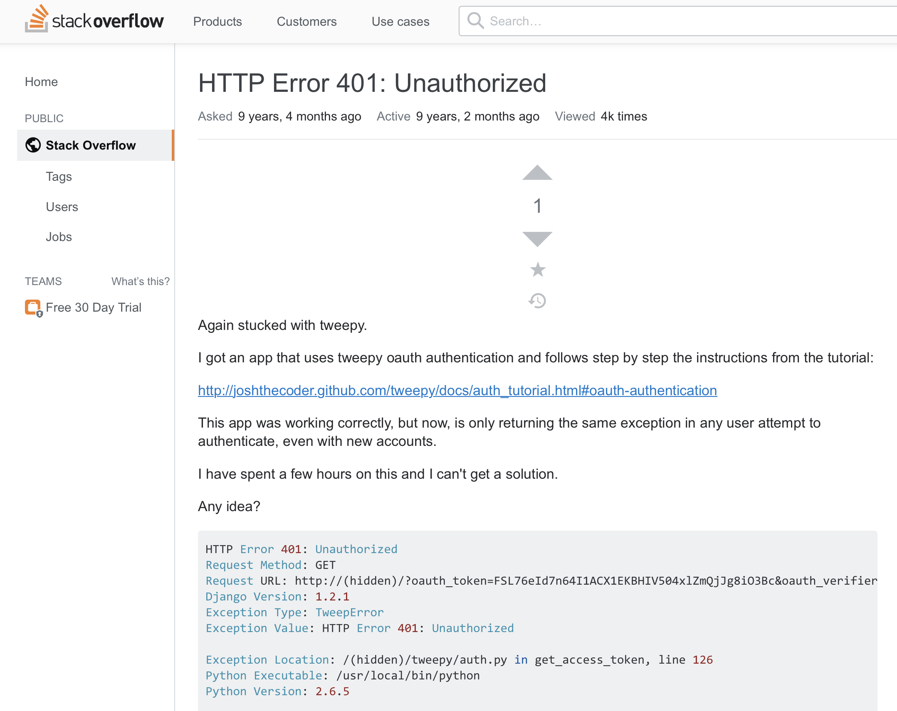
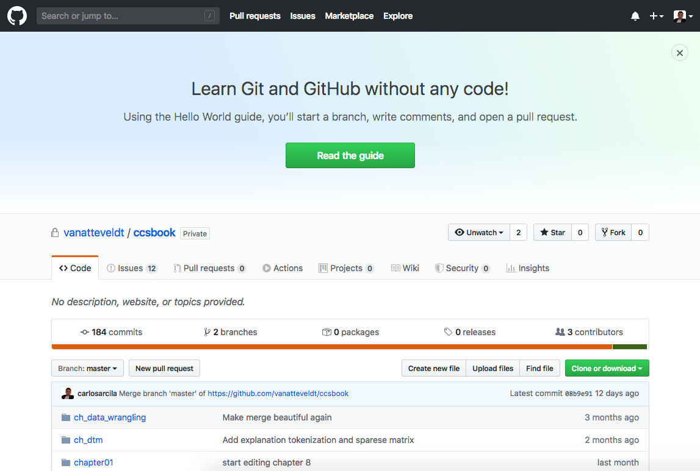
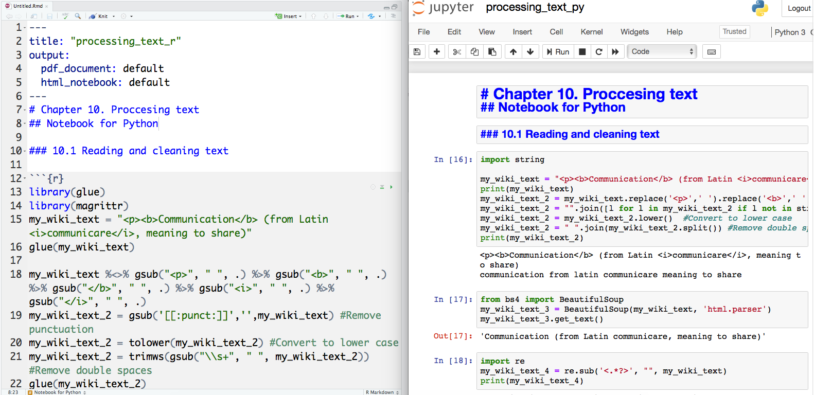
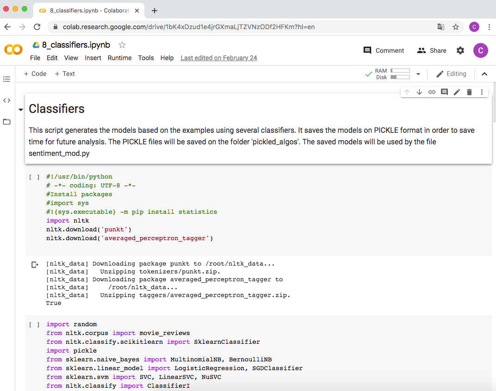

4 How to write code
Abstract. Programming is no longer a solitary activity, and almost all questions, problems, and error messages have been encountered and solved before. This chapter explains the most common forms of collaboration and sources of outside help, as well as outlining best practice on how to write and share code yourself.
Keywords. package, library, errors, computational hygiene, notebooks
Objectives:
- Understand the importance of re-using code when programming
- Help beginning coders avoid getting stuck
- Explain “computational hygiene” and show best practices in R and Python to write and share code
In Chapter 3, you have learned how to write your first lines of code. You created objects of different types, used and wrote some functions, and explored the major control structures. You are probably eager to write your first longer piece of code and produce some interesting data processing or analysis script. In this chapter, we prepare you to do this with as little frustration as possible. You will be introduced to some best practices so that you can implement them right from the start, and to some tools that will make your life easier.
First, we will answer the question “how do you avoid reinventing the wheel”: when is it appropriate to simply use someone else’s existing code, and when do you need to write your own code from scratch? And is there a middle ground? Second, we will discuss how to turn error messages – which you will inevitably see a lot – from a frustrating annoyance into a helpful tool. Finally, we will discuss some best practices when writing code.
4.1 Re-using Code: How Not to Re-Invent the Wheel
Just as in any human language, programming languages also consist of a vocabulary, syntax rules, and expressions. Using the proper words and grammar, you can build from scratch any idea your imagination allows. That’s a wonderful thing! But, let’s be honest: the language itself, the expressions, ideas, and all the abstract constructs seldom come originally from you. And in fact, that’s great as well: otherwise, you’d have to deeply think of every element before talking and expressing any thought. Instead, you use pre-existing rules, ideas, perceptions, and many different narratives to create your own messages to interact with the world. It’s the same with coding: you never start from scratch.
Of course you can code anything you want from the very beginning, even just using 0’s and 1’s! When reading through the previous chapters, maybe you even started to think that complex operations will be exhausting and will take a really long time. After all, from the basic operations we did to a useful statistical model seems like a long way to go.
Luckily, this is not the case. There is almost no project in which computational scientists, data analysts, or developers do not re-use earlier code in order to achieve their goals more quickly and efficiently. The more common a task is, the greater the chance that you do not have to re-invent the wheel. Of course, you have to give credit where credit is due, but it is not uncommon to paste code snippets from others into your own code and adapt them. This is especially true for standard operations, for which there are only so many ways to achieve the desired result.
There are different ways to re-use earlier code. One is to copy and adapt raw lines of code written by someone else or by yourself in the past. In fact, there are many online repositories such as GitHub or BitBucket that contain many programs and well-documented code examples (see Section 4.3). When conducting computational analyses, you will spend a significant part of your time in such repositories trying to understand what others have done and figuring out how you can use it in your own work. Of course, make sure that the license of the code allows you to use it in the way you want. Also, give credit where credit is due: at the very least, place a comment with a link in your code to indicate what inspired you.
Another way is to build or import functions that summarize many lines of code into a simpler command, as we explained in Section 3.3. Functions are indeed powerful ways of reusing code, since you do not have to write the same code over and over again if you need it in multiple places. Packages are probably the most elegant approach to recycle the work done by other colleagues. In Section 1.4 you already learned how to install a package, and you probably noticed how easy it is to bring many pre-built functionalities onto your workspace. You can also write and publish your own package in the future to help your colleagues to write less code and to be more efficient in their daily job (see also Section 15.3)!
Many questions can arise here: what to re-use? When to use a function written by someone else instead of writing the code yourself? Which scripts and sources are trustworthy? Which is the best package to choose? How many packages should we use within the same project? Should we care about package versions? And must we know every package that is released in our field? There are of course multiple answers to these questions and it will be probably a matter of practice how to obtain the most appropriate ones. In general, we can say that one premise is to re-use and share code as much as you can. This idea is limited by constraints of quality, availability, parsimony, updates, and expertise. In other words, when recycling code we should think of the reputation of the source, the difficulty of accessing it, the risk of having an excessive and messy number of inputs, the need to share the last developments with your colleagues, and the fact that you will never be able to know everything.
Let’s take an example. Imagine you want to compute the Levenshtein distance between two strings. That’s a pretty straightforward metric that answers the question: “How many edits (removing/changing/inserting characters) do I need to apply to transform string1 into string2?” It can be used for plagiarism detection, but may be interesting for us to determine, for instance, whether a newspaper copied some content from somewhere else, even if small changes have been applied. You could now try to write some code to calculate that (and we are sure you could do that if you invested some time in it!), but it is such a common problem that it has been solved multiple times before. You could, for instance, look up some functions that are known to solve the problem and copy-paste them into your code. You can find a large number of different implementations for both Python and R here: en.wikibooks.org/wiki/Algorithm_Implementation/Strings/Levenshtein_distance. You can then choose and copy-paste the one which is most appropriate for you. One that is very fast, because you want to compare a huge set of strings? One that is easy to understand? One that uses only a few lines of code to not distract the reader? Alternatively, if you look for available packages for Python and R, you see that there are multiple packages that you can install with install.packages (R) or pip (Python) and then import. If you go for that route, you don’t need to care about the internal workings and can “abstract away” and outsource the problem – on the other hand, the users of your code now have one more dependency to install before they can use your code.
In the case of package selection, we understand it can be quite overwhelming, with so many different packages from different contributors. In fact, sometimes the same task, such as topic modeling, can be done using multiple different packages. So, how to find and choose the best package? Besides resources like this book, the most important guide is probably the community around you: using packages that a lot of other people also use means that the package is probably well maintained and documented, and that there is a community to ask for help if needed. Since all packages on Pypi and CRAN are free to download and install, however, you can also shop around and see what the various packages do. When comparing different packages, it is always good to check their documentation and their GitHub page: packages that are well documented and that are updated frequently are often a good choice.
For example, the authors of this book had several intensive discussions of which packages to mention and use in the proposed exercises, an issue that became complex given the variety of topics addressed in this book. In the case of text analysis, a library such as NLTK for Python was incredibly popular among computational analysts until a few years ago becoming a package of reference in the field, but it has – at least for some applications – been overpassed by friendly and sophisticated new packages for natural language processing like SpaCy. So, which should we have included in this book? The one which is well-known (with excellent documentation by the way) and still used by thousands of practitioners and students around the world, or the one which is penetrating the market because of its easiness and advantages? Moreover, when choosing the second option, are we sure a more trendy package is going to be stable in time or is it going to be superseded by a different one in just few months?
There isn’t the one golden way of how to re-use code and packages, but this dynamic scenario also depicts an exciting and provocative field that forces us to keep ourselves up to date.
4.2 Understanding Errors and Getting Help
Even though re-using code makes writing programs easier and less error-prone, every programmer makes mistakes. Programming can be a frustrating endeavor, and you will encounter error messages, bugs, and problems that you don’t know how to fix. This section shows how error messages are useful rather than scary and lists the main error messages encountered in the beginning. It explains how to search for help within the R/Python documentation, how to use online resources, and how to formulate questions to your instructor or community so you get a useful answer.
If you tried out some of the concepts in Chapter 3, you have probably already come across some typical or basic errors in programming. Maybe you tried to call a function from a library that you forgot to load before, or maybe you tried to multiply a string with a float. There are thousands of errors that you will encounter, and there is no exhaustive list of them, so you won’t find a complete structured catalogue to solve your problems when coding. This might seem a rough road for any scientist but in fact you will get used to finding the answers by different means.
4.2.1 Error Messages
There are two common strategies to avoid getting stuck and move on with your task: one is to understand the type of error you are getting, and the other is to know where to go to obtain valuable help. We would add a third one: be patient and do not despair!
Both R and Python produce warning or error messages when something is wrong in your code. Beginning computational researchers may sometimes feel afraid, confused, or even frustrated when they get such a painful message (we have all felt this) and some then would become so anxious that they don’t pay enough attention to the text of the error message thinking it will not be helpful to solve the problem and blaming themselves for not being a perfect programmer. But the more you code, the more you realize that getting these error messages is just part of the routine and that it is very useful to carefully read the warning instead of skipping it.
In most cases, the error message in your console will tell you exactly where the problem is: a specific line or operation within your code. With this information in many cases you will quickly identify what the problem is about and you will know how to solve it. One of the most common causes for errors is just very silly typos!
Next to the location (the line number), the error message will also tell you more about the problem. For example, when trying to multiply the float object a by the string object b you will get “Error in a * b : non-numeric argument to binary operator” in R or “TypeError: can’t multiply sequence by non-int of type ‘float’” in Python. As intimidating as this language may sound in the first place, if you re-read it, you will realize that it, in fact, explains exactly what went wrong. This helps you to understand what you did wrong and enable you to fix it.
If you get a warning error that you don’t understand or get an incorrect result in your code you have three options to get more information: use the help commands to know more about any object or function (help(object) in both R and Python); read the documentation of base R, base Python or of any individual package (there are plenty of them online!); and look at the wonderful community of worldwide coders, read what they have discussed so far or even pose a question to challenge their minds.
Let’s consider this third option. Imagine you read the text of an error message and you feel you don’t understand it. It may be because the wording is too complex or because it just gives an “error code” (i.e. “error 401 - Unauthorized” when trying to connect to the Twitter API). If your first thought is to try searching for it in Google, then this is completely correct: it might take you to code documentation, or better to an online discussion in sites such as Stack Overflow, which is a useful question and answer website for coders (see Figure 4.1). It is very likely that some colleagues have already posed a question about the meaning of that error and others have already provided an answer to what it means and especially help with how to fix it.

Depending on the complexity and novelty of your problem you might find a helpful answer in a few minutes or it might take you hours. Never get desperate if you visit many discussions without understanding everything directly: you may have to come back to some of them after reading all. Moreover, some answers will include the exact code you need (ready for copy-and-paste), code to be adapted (i.e. changing the name of your variables) or in pseudocode (informal description of the code). In all of the cases you will be the responsible for making sense of the huge (and sometimes messy) amount of sources you will come across.
It is of course possible that you don’t get what you need in previous discussions. In that case you will be able to create your own question and wait for someone to reply. If you decide to do this, take some advice into account. First, be sure that the answer is not elsewhere within the same website (a first answer could be just a link to a previous post!). Second, don’t worry that your question is silly or too basic: you will find in the community all kinds of coders, from those who are taking their first steps to those who are very advanced. Third, be clear, specific, and focus on what you need to solve. This is probably the most important advice since it is necessary that other coders understand what you need in a few words (not philosophical discussions or previous elaborated rationales) so they can decide to spend some minutes of their time and help you. It is a very common practice that you copy in the questions the warning message or the code you are having trouble with because peers can even fix it themselves and give the solution right away. Do not worry if your post receives a lot of replies after getting what you needed. This thread might also help others in the future!
4.2.2 Debugging Strategies
It’s not always straightforward to understand what is going wrong. Maybe your script does not even produce an error message, but just produces some unexpected result.
Of course, every program is different and there is not one way to solve every issue, but there are some simple strategies that help you debugging your code. The underlying core principle is to better understand what exactly is happening.
- Print more. For example, if you have a for-loop, just add a print statement to the loop that prints the current value that is processed, or some other information that helps you understanding what data exactly are processed, or what intermediate result is achieved at which step. There are more advanced tools for keeping track of values, such as the so-called debuggers in advanced IDEs or the logging module in Python, but a couple of extra print functions can serve the same purpose.
- Keep track of which code blocks have been executed how often. For instance, maybe you have some if statement, but the condition is simply never True, so that the whole code block is never executed. You can create an integer with value 0 at the beginning of the code, and then increment it by one within the code block. If you print it afterwards, you know how often the block has been visited.
- Cut it down. Remove (comment out) everything that is not strictly necessary and see whether you can make a simplified version of your code run, before you extend it.
- Add consistency checks. For instance, if from a theoretical point of view, two lists need to have the same length, check it with the length function; similarly, if you know that an object must have a specific value (e.g., because you know the result), check this assumption.
Finally, when you know that some typical errors may arise and you don’t want your script to stop or crash, you can add an exception in your code. Suppose for example that you are building a function to connect to an API (see Section 12.1). There might be many reasons for getting an error, such as an Internet connection problem, a server issue, or a missing document. You might decide to skip the error and continue the next lines or you could even give more detailed instructions of what to do (i.e. wait five minutes and try again). The inclusion of these exceptions are in fact a good practice and will help your code to be more robust and stable.
Let’s make Example 3.17 from the previous chapter more robust so that it does not fail if an invalid headline is passed. For instance, in Python, the object None has no defined length; and in R, it is illegal to calculate the number of characters in a factor. It is a good idea to think about how you want to deal with this: either you want your script to just fail (and clean up the data), or you may want to deal with the error in some way. Especially if you have little control over the input data and/or if the process you are dealing with takes a long time, you may want to handle these errors rather than having your script fail. In Example 4.1, we show how to use such a try/except construction: you indicate which code block you want to try (e.g., run as normal); and in the next block, you indicate what should happen if that results in an error.
Note that using try … except statements like this is fairly common in Python code, in R it is not needed as frequently. In many cases where a Python function like int raises an exception if the input cannot be converted to an integer, the R function as.numeric just returns a missing value. Thus, in R you normally only encounter these statements when using external resources, for example when using an API or scraping a web page. See Chapter 12 for more details on these topics.
4.3 Best Practice: Beautiful Code, GitHub, and Notebooks
This section gives a brief explanation of “computational hygiene”: how to structure your code so you can understand it later, the importance of naming and documentation, the use of versioning and online repositories such as GitHub, and the use of literate programming (such as through the use of RMarkdown or Jupyter notebooks) to explain, share, and publish code.
Coding is more than learning the basic rules and creating a message. If you want to use code to communicate ideas and to work with peers you have to take care of many content and shape details in order to guarantee the comprehension and reproducibility of the scripts. It even applies to the code you write for “private use” because it is highly likely that you will forget your original thoughts from one day to another, or that you later realize that you need to share it with someone else to ask for help. Thus instead of writing personal, hidden and illegible code without adopting any social conventions, you should dedicate some extra effort to make your scripts easy and ready to share.
The first step of the computational hygiene is within the code itself. Every time you create an object, a variable, or a function, you have to take many apparently unimportant decisions such as giving a name, separating words, lines, or blocks, and including comments. These decisions are personal, but should mostly depend on social conventions in order to be useful. As you may imagine, there are many of these conventions for general programming and specially for specific languages. To mention just a few, you can find an “official” style guide for Python1 or Google’s R style guide2. Some of these guides are extensive (they cover every detail) and some are more general or abstract. You do not have to see them as a “bible” that needs to be strictly adhered to in each and every situation, but they offer very good guidance for best practice. In fact, even when you find them useful it is true that you will probably learn more of these practices from reading good examples, and especially from interacting with a specific community and its rules.
We will mention some general guidelines that apply for both R and Python. If it is the first time you are venturing into the world of code you will find this advice useful, but if you are a more advanced learner you will probably get more specific knowledge in the more detailed sources for each language and community.
In the case of naming, we encourage you to use meaningful names or standard abbreviations to objects, using lower-case or mixed-case (remember both Python and R are case-sensitive!), avoiding special characters and operators (such as &, @ or %), and not exceeding 32 characters. You normally begin with a letter3 (an upper-case when defining a class), followed by other letters or numbers, and using underscores to separate the words if necessary (i.e. data_2020 or Filter_Text). Some suggest that variable names should be nouns and function names should be verbs, which seems logical if you think of the nature of these objects.
When writing code, please also take into consideration white space and indentations, because you should use them to give proper structure to the code by creating the block statements. In the case of R, also pay attention to the use of curly braces: the convention is that the opening curly brace begins after some code and is always followed by a new line; and the closing curly brace is in its own line except if there are more instructions in the block. Do not write very long lines (more than 80 characters) to help your code fit the screen and avoid lateral scrolling. Good separation of words, lines and blocks will make your script more readable!
Now, if you want to make your code highly understandable and shareable, you have to include documentation. This is probably a very basic dimension of coding but unfortunately some authors forget to take the few minutes it takes to describe what their script does (and why), making your journey more difficult. An essential good practice in coding is to include enough information to clarify your code when it is not clear by itself. You can do this in different ways (even by writing a separate codebook), but the most natural and straightforward manner is to include some comments in the code. These comments should be included both at the beginning of the script to give an overview or introduction to the code, and within the script (in independent lines or at the end of a line) to give specific orientations. In many cases, you will need to read your code later (for example when you need to revise an article or analysis), and a short time spent documenting your code will save you a lot of time later.
R and Python use the hash sign \# to create these comments. The comment will always begin after the hash. If the first character in your line is a \# all the text included will be considered as a comment; but if you have already written some code in a line and include a \# after the code, the initial code will be executed and you will always see the comment by its side. You will normally combine these two ways of documenting your script. As a rule of thumb, insert a comment if the code itself is not obvious, and explain the choices and intentions of the code. So, if a line says df = df - 1, a comment like Decrease df by one is not very useful (as that is obvious from the code), but a comment like Remove one degree of freedom since we estimated the mean does help, as it makes it clear why we are subtracting one from the df object.
Additionally, Python and R encourage the use of so-called docstrings: In Python, place a string surrounded by triple quotation marks at the start of a function; in R, place a comment #' right above the function. 4 In this documentation, you can explain what the function does and what parameters it requires. The nice thing is that if properly used, docstrings are automatically displayed in help functions and automatically generated documentation.
Another way to make your code more beautiful and, crucially, easier to re-use by others and yourself is to make your code as generic as possible. For instance, imagine you need to calculate the sum of the length of two texts, “Good morning!” and “Goodbye!”. You could just write x = 13 + 8. But what if the strings change in the future? And how to remember what 13 + 8 was supposed to mean? Instead of using such hardcoded values, you can therefore write it better as x = len("Good morning!") + len("Goodbye") (for R, replace len by nchar). But the strings themselves are still hardcoded, so you can create these strings and assign them the names s1 and s2 first, and then just calculate x = len(s1) + len(s2). In practice, these types of generalization often involve the uses of functions (Section 3.3) and loops (Section 3.2.1). So, don’t use hard-coded values or “magic numbers”: circumference=6.28*r is much less clear than PI=3.14; circumference=2*PI*r.
Moreover, you must be aware that your code is dynamic and it will normally evolve over time. For example, you may have different files (.py or .R) containing different versions of your script, though this is normally inefficient and chaotic. In order to have a more powerful control of versions and to track changes, coders usually use online repositories to host their scripts for private use and especially to share them. And there are many of these sites, but we believe that GitHub5 is the most well-known and is preferred by data scientists (Figure 4.2 shows the repository we used to write this book).

Once you upload (or commit and push) your code to GitHub, you can access it from anywhere, and will be able to track the historical changes, which in practice will allow you to have multiple versions in the very same place. You will decide if you make the code public or keep it private, and who to invite to edit the repository. When working collaboratively you it will feel like editing a wiki of code, while having a webpage for your project and a network of friends (followers), will be similar to social media. You can work locally or even from a web interface, and then synchronize the changes. When you allow colleagues to download (or clone) your repository you are then making a good contribution to the community of developers and you can also monitor your impact. In addition to code, you can also upload other kinds of files, including notebooks, and organize them in folders, just as you have on your own computer.
One extended good practice when sharing code is the use of literate programming, which is an elegant, practical, and pedagogic way to document and execute the base code. We have already mentioned in this section the importance of including documentation within your code (i.e. using the \# sign and docstrings), but you also have the opportunity to extend this documentation (with formatted texts, images and even equations!) and put everything together to present in a logical structure everything necessary to understand the code and to run the executable lines step by step.
There are different approaches to implement this literate programming in web and local environments, but the standard in R and Python is the use of notebooks. In a notebook you can alternate a text processor with an executable cell to place formatted text between blocks of code. By doing this you can include complete documentation of your scripts, and even more important you can execute each cell one step at a time (loading the results in memory while the notebook is open). This last point allows you avoid the risk of executing the whole script at once, and also gives you more control of the intermediate outputs produced in your code. Once you get used to notebooks, you will probably never write code for data analysis in a basic editor again!
The usual tool in R is the R Markdown Notebook, and in Python the Jupyter Notebook (see figure 4.3), but in practice you can also deploy Python in Markdown and R in Jupyter. Both tools can help you with similar tasks to organize your script, though their internal technical procedures are quite different. We have chosen Jupyter to develop the examples in this book because it is a web-based interactive tool. Moreover, there are several services such as Google Colab6 (Figure 4.4), that allow you to remotely run these notebooks online without installing anything on your computer, making the code highly reproducible.

So far you have seen many of the possibilities that the world of code offers you from a technical and collaboration perspective. We will come back to ethical and normative considerations throughout the book, in particular in Section 12.4 and Section 16.3.

https://www.python.org/dev/peps/pep-0008/↩︎
https://google.github.io/styleguide/Rguide.html↩︎
An exception are so-called private identifiers – identifiers that are not supposed to be directly addressed. They conventionally begin with an underscore.↩︎
For more information, see www.python.org/dev/peps/pep-0257/#what-is-a-docstring and cran.r-project.org/web/packages/roxygen2/vignettes/roxygen2.html,respectively↩︎
https://github.com/↩︎
https://colab.research.google.com↩︎